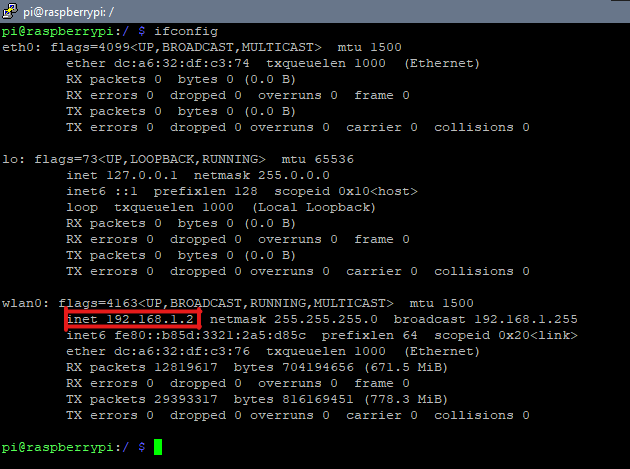

Modifica del file di default
Per collegarci al DataBase tramite qualunque dispostivio nella nostra rete locale (Per ora) dobbiamo modificare un file di default che si trova:
etc/mysql/mariadb.conf.d/50-server.cnf
quindi scriviamo
cd /
sudo nano etc/mysql/mariadb.conf.d/50-server.cnf
Ora vi troverete nel file 50-server.cnf.
Usando le freccete scendete fino a trovare questa riga
# Instead of skip-networking the default is now to listen only on
# localhost which is more compatible and is not less secure.
bind-address = Qualche indirizzo IP
Assicuratevi di commentare la riga bind-address (usando il canceletto #), im modo che assomigli a questo:

Scopriamo Ip locale del nostro Raspberry
Nel terminale di Raspberry scriviamo:
ifconfig
Una volta scritto apparirano molte scritte a schermo, se siete collegati tramite cavo LAN allora prendete in considerazione la sezione
eth0 nella quale troverete il campo inet e acconto Ip locale.
Invece se siete collegati tramite WLAN, vi bastera seguire le stesse istruzioni ma prendete in considerazione la sezione wlan0

Impostiamo il Port forwarding
Apriamo un qualsiasi Browser come Google Chrome e nella barra di ricerca scriviamo:
192.168.1.1
Dopo aver premuto invio sarete entrati nella pagina delle impostazioni del vostro modem.
La pagina vi chiedera di effetuare il login. Le credenziali le potete trovare dietro al vostro modem (le credenziali per il login NON sono le stesse per l'acesso alla rete).
Dovete sapere che le pagine di configuarazione dei modem sono diverse per ogni brand, ma comunque il contenuto è lo stesso.
Portiamoci su Port Forwarding, generalmente nella sezione Sicurezza > Port Forwarding
Creiamo un novo elemento e impostiamo i seguenti parametri
- Nome = Un nome qualunque
- Protocollo = TCP e UDP
- Indirizzo IP Host Remoti = L'asciamo il parametro vuoto oppure come potete vedere dalla immagine (0.0.0.0 ~ 0.0.0.0 è un parametro vuoto)
- Host LAN = indirizzo IpV4 del Raspberry ip
- Porta WAN = 3306 ~ 3306
- Porta Host LAN = 3306
Clicchiamo su aplica per salvare e attiviamo la porta cambiando lo switch da OFF a ON.
Fate tutti i procedimenti in modo che assomiglino a questo

Ora siamo pronti per usare il nostro database fuori dalla nostra rete locale.
Nel prossimo articolo vedremo come collegarlo e imposteremo un DNS dinamico all' Ip del ruter
Continua: Impostare il DNS dinamico